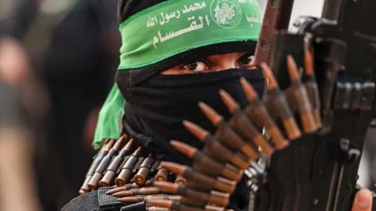

يمتد على شريط ساحلي على البحر الأبيض المتوسط بطول حوالي 40 كيلومترًا
المساحة الكلية: حوالي 365 كيلومترًا مربعًا تعتبر واحدة من أكثر المناطق كثافة سكانية في العالم
دير البلح مدينة غزة (العاصمة الإدارية والاقتصادية) خان يونس جباليا رفح
-أرضها مسطحة ومنبسطة إلى حد كبير
-سكانها أغلبهم من اللاجئين الفلسطينيين الذين هُجّروا عام 1948
-يواجه السكان حصارًا شديدًا منذ عام 2007، مما يؤثر على الحركة، الاقتصاد، والمرافق الحيوية هل ترغب أن أرس
كتائب الشهيد عز الدين القسام هي الجناح العسكري لحركة المقاومة الإسلامية "حماس"، وتُعد واحدة من أبرز الفصائل الفلسطينية المسلحة. تأسست الكتائب في أوائل التسعينات، وسُمّيت باسم عز الدين القسام، العالم والداعية السوري الذي قاد مقاومة ضد الاحتلال البريطاني والصهيوني في فلسطين خلال الثلاثينيات. تهدف كتائب القسام إلى مقاومة الاحتلال الإسرائيلي واستعادة الأراضي الفلسطينية المحتلة، وتعتبر أن العمل العسكري هو وسيلة من وسائل الدفاع المشروع عن الشعب الفلسطيني في ظل الاحتلال والحصار. وقد برزت الكتائب في عدة محطات تاريخية، خاصة خلال الانتفاضات الفلسطينية والحروب المتكررة على قطاع غزة.
-إطلاق الصواريخ محلية الصنع على المدن والمستوطنات الإسرائيلية
-تنفيذ عمليات ضد مواقع الجيش الإسرائيلي
-تطوير قدرات عسكرية محلية رغم الحصار الخانق
رغم أن المجتمع الدولي يختلف في تصنيفه للكتائب، حيث تعتبرها بعض الدول منظمة "إرهابية"، فإن شريحة واسعة من الشعب الفلسطيني والعالم العربي والإسلامي ينظرون إليها على أنها رمز للمقاومة والكرامة الوطنية. تمثل كتائب القسام صوتًا من أصوات الفلسطينيين في مواجهة الاحتلال، وتعكس واقعًا معقدًا حيث تختلط فيه السياسة بالدين، والمقاومة بالأمل في نيل الحرية.
اللهم انصر اخواننا في فلسطين